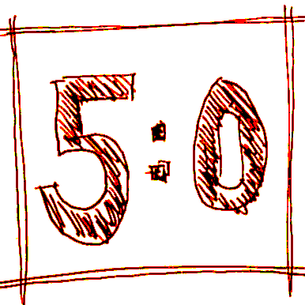

Animation Workbench/fr
This documentation is not finished. Please help and contribute documentation.
GuiCommand model explains how commands should be documented. Browse Category:UnfinishedDocu to see more incomplete pages like this one. See Category:Command Reference for all commands.
See WikiPages to learn about editing the wiki pages, and go to Help FreeCAD to learn about other ways in which you can contribute.
Introduction
Boîte à outils d'animation pour FreeCAD
Cet atelier peut être utilisé pour créer des séquences d'images.
Il est encore en construction - toutes les contributions sont les bienvenues...
Références
- Auteur : microelly2
- Page d'accueil : Animation
- Code source sur github : Animation
Installation
Cet atelier peut être installé à partir du Gestionnaire des extensions. Pour une installation manuelle, voir Installer des ateliers supplémentaires.
Outils
Description détaillée ici
Barre d'outils

Menu déroulant
 Mover : déplace les objets pendant un intervalle de temps le long du vecteur de mouvement.
Mover : déplace les objets pendant un intervalle de temps le long du vecteur de mouvement. Rotator : fait tourner les objets pendant un intervalle de temps. Les autres paramètres sont l'axe/direction de rotation, le centre de rotation et l'angle.
Rotator : fait tourner les objets pendant un intervalle de temps. Les autres paramètres sont l'axe/direction de rotation, le centre de rotation et l'angle. Tranquillizer : ralentit le processus de rendu si l'animation est trop rapide.
Tranquillizer : ralentit le processus de rendu si l'animation est trop rapide. Photographer : crée une image d'un format et d'une taille donnés dans un répertoire de rendu pour chaque pas de temps.
Photographer : crée une image d'un format et d'une taille donnés dans un répertoire de rendu pour chaque pas de temps. Plugger : connecte un objet nouvellement créé à un objet navette déjà animé ou à un vertex d'une esquisse animée pour permettre au sketcher de calculer des transformations complexes avec certaines contraintes au moyen de l'objet navette.
Plugger : connecte un objet nouvellement créé à un objet navette déjà animé ou à un vertex d'une esquisse animée pour permettre au sketcher de calculer des transformations complexes avec certaines contraintes au moyen de l'objet navette. Adjuster : permet de calculer une valeur par une fonction linéaire de base. Maintenant les croquis peuvent être animés en changeant les valeurs dans les contraintes.
Adjuster : permet de calculer une valeur par une fonction linéaire de base. Maintenant les croquis peuvent être animés en changeant les valeurs dans les contraintes. Styler : contrôle l'objet Gui. La visibilité, la transparence et la couleur de la forme peuvent être modifiées à la volée.
Styler : contrôle l'objet Gui. La visibilité, la transparence et la couleur de la forme peuvent être modifiées à la volée.
Billboard : Billboard et Moviescreen sont des fonctionnalités pour afficher des informations supplémentaires comme des textes ou des images pendant l'animation. Moviescreen : Les fonctions Billboard et Moviescreen permettent d'afficher des informations supplémentaires comme des textes ou des images pendant l'animation.
Moviescreen : Les fonctions Billboard et Moviescreen permettent d'afficher des informations supplémentaires comme des textes ou des images pendant l'animation. Extruder : peut être utilisée pour démontrer la fonctionnalité d'une fraiseuse ou d'une imprimante 3D.
Extruder : peut être utilisée pour démontrer la fonctionnalité d'une fraiseuse ou d'une imprimante 3D. Viewpoint :
Viewpoint : Manager :
Manager : Bounder : limite les valeurs du Placement à un intervalle. C'est la projection d'un mouvement sur un espace limité au minimum et au maximum.
Bounder : limite les valeurs du Placement à un intervalle. C'est la projection d'un mouvement sur un espace limité au minimum et au maximum. Filler : peut être utilisé pour remplir le volume d'une pièce de bas en haut comme pour remplir une bouteille de vin. Il peut fonctionner comme une tranche de la pièce comme un scanner.
Filler : peut être utilisé pour remplir le volume d'une pièce de bas en haut comme pour remplir une bouteille de vin. Il peut fonctionner comme une tranche de la pièce comme un scanner. Gearing : anime la rotation de 2 ou 3 engrenages ou un système étoile-planète-lune.
Gearing : anime la rotation de 2 ou 3 engrenages ou un système étoile-planète-lune. Kartan : anime une articulation Kardan.
Kartan : anime une articulation Kardan. Scaler:
Scaler: Placer:
Placer: Diagram:
Diagram: Collision:
Collision: Combiner:
Combiner: AnimationControlPanel:
AnimationControlPanel: Pather:
Pather: Snapshot:
Snapshot: ViewSequence:
ViewSequence: Speeder:
Speeder: Toucher:
Toucher: Tracker:
Tracker: Trackreader:
Trackreader: Abroller:
Abroller: Delta:
Delta: Sum:
Sum: Assembly2Controller:
Assembly2Controller: Connector:
Connector:
{kind=link}
Autre
 Animation:
Animation: Case action:
Case action: False action:
False action: Follow me:
Follow me: Loop action:
Loop action: Query action:
Query action: Repeat action:
Repeat action: Script action:
Script action: True action:
True action: While action:
While action: Reset:
Reset: Icon1:
Icon1: Icon2:
Icon2: Icon3:
Icon3:
Liens avec l'atelier Animation
- Wiki de l'atelier : www.freecadbuch.de
- FreeCAD Wiki :
- Forum FreeCAD : https://forum.freecad.org/viewtopic.php?t=8976&start=10
- Tutoriels : Toolset
- Vidéos : Vidéos d'animation
- Fichiers : Exemples
- Cas de test : Test cases
- Signalez les bogues : Veuillez signaler les bogues sur le forum de FreeCAD ou sur problèmes d'animation.
Autres liens intéressants
- ExplodedAnimation : atelier de FreeCAD permettant de créer des vues éclatées et des animations d'assemblages.
- Assembly2 : atelier d'assemblage pour FreeCAD avec prise en charge de l'importation de pièces à partir de fichiers externes.
- Extensions